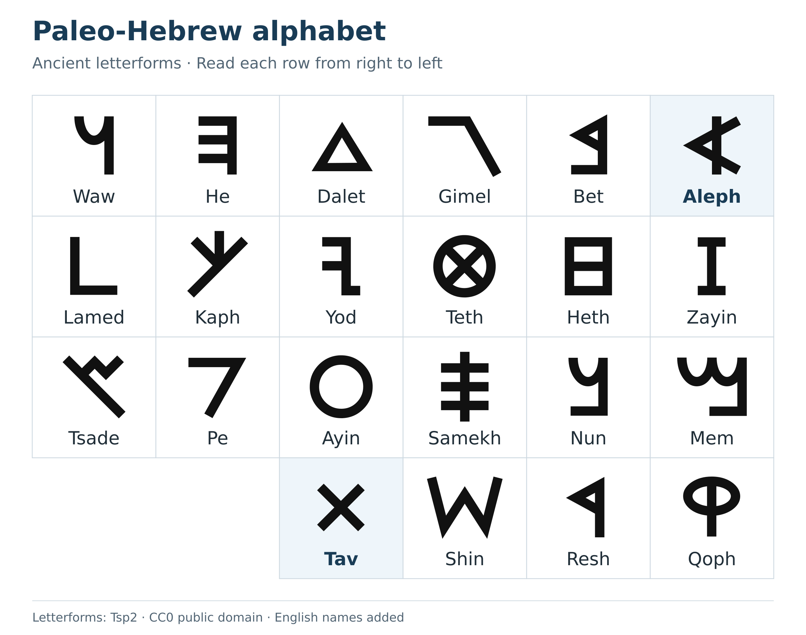
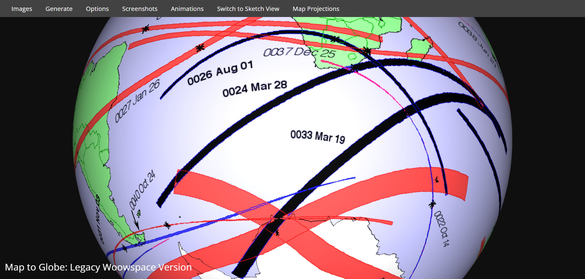
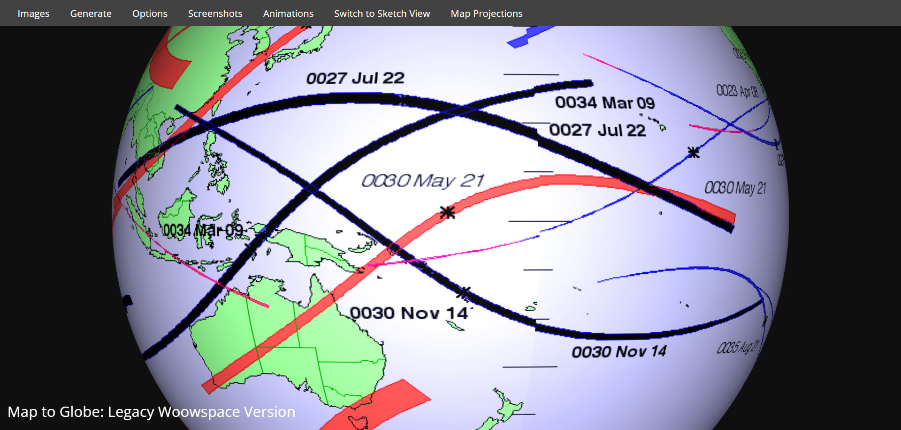
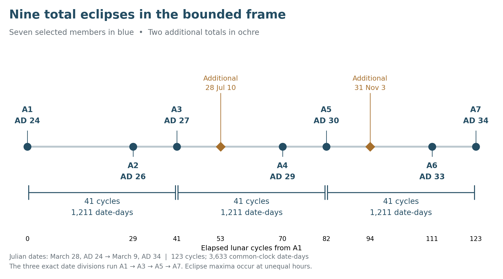
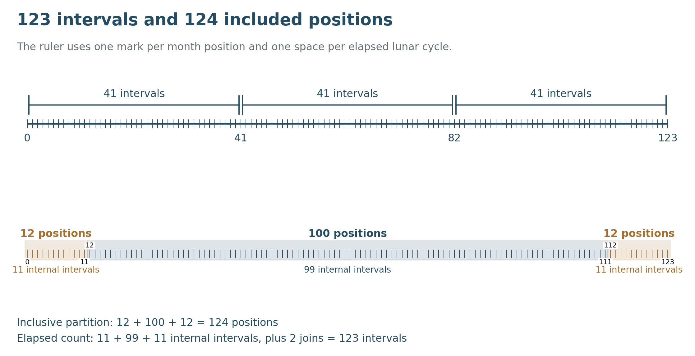
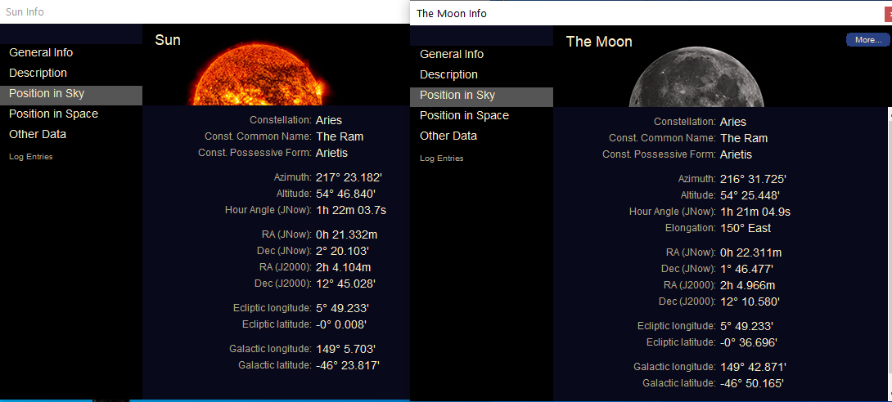
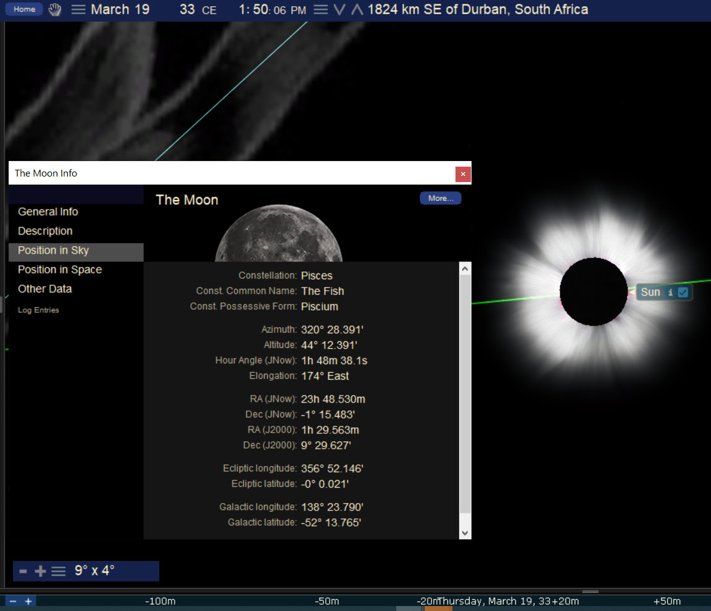

The First and the Last
Book 2 · Celestial Signs of the First Advent · Chapter 9
The solar frame around the Passion
“I am the Alpha and the Omega, the First and the Last, the Beginning and the End.”
— Revelation 22:13, BSB[1]
The eclipse paths in this chapter spread across the earth. Turn the globe, and different parts of their arrangement come into view. In the supplied images I see the forms that led me to call this the Alpha and Omega sign. The dates also carry a repeated structure: three successive spans of 1,211 days, each containing 41 lunar cycles. Both the visible forms and the measured intervals belong to the argument, though they ask different things of the reader.
I approach them through Christ’s declaration that He is the First and the Last. The Sun is a created light. Its movements can bear witness to the One who made it, and that witness can extend beyond what a person standing in Judea could see. The event takes place whether anyone beneath its path understands it. Revelation gives us reason to take that heavenly perspective seriously: the Lamb’s death concerns heaven and earth together.[2]
The astronomical frame considered here runs from March 28, AD 24 to March 9, AD 34. Within it I follow seven selected total solar eclipses. The complete catalog contains nine totals, and the two additional events will remain visible in the account. The chapter’s seven-member arrangement is a selection within that fuller record.[3]
The first and last letters
Alpha and Omega are the first and last letters of the Greek alphabet. Aleph and Tav express the corresponding first-and-last meaning in Hebrew. The Hebrew comparison here concerns the ancient Hebrew script, commonly called paleo-Hebrew, with its angular Aleph and cross-shaped Tav, rather than the modern square letters. These ancient forms give the visual reading its Hebrew expression.



Christ’s words in Revelation reach beyond the beginning and ending of a decade. John sees Him as the living One who was dead and is alive forever. In John’s Gospel, His existence reaches back before Abraham. I read the eclipse composition within that larger testimony: the First and the Last enters history while His authority embraces its whole course.[4]
The supplied globe views show the arcs and crossings that prompted this reading. Turning the globe brings different parts of the composition into view. The paths extend across a curved earth, and the illustrated perspectives let us follow their relationship as a whole.


The original composite contains paths beyond the seven selected dates, including events outside AD 24–34. It is a view of a wider eclipse atlas, with the proposed letter form emphasized within it. The table and interval diagram below supply the bounded sequence used for the numerical argument.[5]


I see the language of the First and the Last taking visible form across the earth. Alpha and Omega give that testimony its Greek expression; the ancient Aleph and Tav give it its Hebrew counterpart. I read these celestial paths as a created witness to the One who entered our days, died within them, and lives forever.
The paths also depend on the model of earth’s rotation. Ancient eclipse calculations locate the bodies in the heavens more securely than they recover the exact longitude of the shadow on earth. The original maps are useful illustrations of the proposed form. A claim about a particular town, boundary, or intersection would require its own ground-track check and an explicit treatment of that uncertainty.[6]
Looking across 6000 years
I personally examined the eclipse maps carefully across the full span from 3000 BC to AD 3000. In that survey, the first century AD is the only period in which I see the ancient Aleph and Tav, the corresponding Alpha and Omega imagery, and the fish taking shape this cleanly. I found no other period whose combined forms come as close to the letters and fish I am describing.
Related arrangements recur over the longer eclipse rhythms. The scale I have in mind is 100 Saros periods, about 1,803 years. Their outlines and clarity vary from one period to another. Near the middle of the full survey, the first-century forms remain the clearest to my eye.
This is the most subjective and controversial part of Book 2. I am judging visual resemblance, and readers may judge the shapes differently. I invite them to examine the same 6,000 years, follow the paths and turn the globe for themselves, and arrive at their own conclusions.[5]
Nine totals and the seven selected members
Here is every total solar eclipse within the stated frame. A1–A7 are the members used in the comparisons developed in Chapters 5–7. The two other totals are marked Additional. Keeping them in the table makes the choice visible.[7]
All dates are Julian. The JDN column identifies a common noon reference on the named date; subtracting those integers counts date-to-date days. The last column counts lunar cycles from A1 using NASA’s lunation numbers. It does not depend on deciding which Hebrew month begins at a particular sunset.
| Place in the comparison | Julian date | Noon date JDN | Lunar cycles from A1 |
|---|---|---|---|
| A1 | March 28, AD 24 | 1,729,911 | 0 |
| A2 | August 1, AD 26 | 1,730,767 | 29 |
| A3 | July 22, AD 27 | 1,731,122 | 41 |
| Additional | July 10, AD 28 | 1,731,476 | 53 |
| A4 | November 24, AD 29 | 1,731,978 | 70 |
| A5 | November 14, AD 30 | 1,732,333 | 82 |
| Additional | November 3, AD 31 | 1,732,687 | 94 |
| A6 | March 19, AD 33 | 1,733,189 | 111 |
| A7 | March 9, AD 34 | 1,733,544 | 123 |
In the same bounded interval the catalog also lists seven annular and eleven partial solar eclipses. The nine totals above are therefore a type-specific list within a total of twenty-seven solar eclipses. The seven selected members should always be described with that scope intact.[8]


The selected route follows the Exodus-era stellar comparisons and the later chronological comparisons already examined. A1 supplies the opening member. A2–A7 carry the six earlier stellar comparisons, one of which uses a near-total partial eclipse on the BC side. The arrangement gives us a coherent set to study without turning it into an exhaustive count of what heaven was doing.
The opening eclipse is also the beginning of an astronomical frame, not a date supplied by Luke for Christ’s baptism. Luke locates John’s public appearance through the reign of Tiberius and the rulers of Judea. The ministry and Passion sit within the wider frame considered here; these eclipse endpoints do not establish a ten-year public ministry.[9]
The repeated interval
Read only the selected A1–A7 dates in order. Their successive differences are:
856 + 355 + 856 + 355 + 856 + 355 = 3,633 days.
The corresponding lunar-cycle differences are:
29 + 12 + 29 + 12 + 29 + 12 = 123 cycles.
Pairing the steps gives the clearest division of the whole frame. A1 to A3, A3 to A5, and A5 to A7 each span 1,211 date-days and 41 lunar cycles. The complete arrangement therefore has three equal date divisions, not merely two.[10]
The overlapping comparisons used earlier remain valid as well: A2 to A4 and A4 to A6 each give 355 + 856 = 1,211 date-days. They draw attention to the inner sequence. The three successive divisions show how the same rhythm extends from the first member to the last.
These day equalities compare the same clock reference on each named date. The actual instants of greatest eclipse fall at different hours. Between the maxima at A1 and A7, the catalog’s dynamical times give about 3,632.686 days. The maxima also do not divide into three exactly equal physical intervals. The exact 3,633 belongs to the date count.[11]
An eclipse year is the interval associated with the Sun’s return to the same lunar node, about 346.62 days. The 1,211-day span is approximately 3.494 eclipse years, close to three and a half. It is shorter than three and a half ordinary solar years. It also differs from Revelation’s 1,260 days by 49 days. The measured interval keeps its own length when I place it beside the prophetic half-week.[12]
I read a repeated period of witness here. That reading can stand with the actual 41-cycle intervals in view. Revelation’s forty-two months and 1,260 days remain the measures given in the text; the eclipse sequence does not silently replace them. The comparison is a relationship to consider, rather than an assertion that the passage names these seven dates.
Counting 123 intervals and 124 positions
The whole frame contains 123 elapsed lunar cycles. Counting the opening and closing month positions gives 124 positions. This is the familiar difference between counting the spaces and counting the endpoints.
Label the opening position 0. The last position is then 123. There are 124 labels on the ruler, but only 123 steps between them.


The expression 12 + 100 + 12 can partition those 124 positions. For example, positions 0–11 form the first twelve, 12–111 form the middle hundred, and 112–123 form the final twelve. This is an inclusive arrangement of labels. Within those three groups there are 11, 99, and 11 internal intervals; the two joins between groups bring the whole back to 123.[13]
That distinction matters because the earlier Exodus and Conquest windows each span 100 elapsed lunations. A middle group of 100 included month positions here spans 99 internal intervals. The two uses of “100” are related in the proposed composition, but they are different counts. The AD frame does not become 124 elapsed lunations, and an independently measured 100-lunation core cannot be assumed from the expression alone.
The firm numerical structure is straightforward: 123 lunar cycles, 124 included positions, and three divisions of 41 cycles. That is enough to let the reader follow the count without asking one number to serve two definitions.
The stars behind the sequence
The selected eclipses also move through recognizable stellar regions. The opening member falls in Aries under modern constellation boundaries. The next two fall in Leo. The November pair falls in Sagittarius and Ophiuchus, respectively. The final two fall in Pisces.[14]


Traditional constellation figures can overlap the formal boundaries. An illustration may show the Serpent-bearer and the Scorpion together, while a modern boundary calculation assigns the Sun to one specific region. The November 24, AD 29 eclipse belongs in Sagittarius in the formal list; the November 14, AD 30 eclipse belongs in Ophiuchus. Traditional figure language remains useful when the formal region is identified alongside it.
The six BC comparisons repeat the broad stellar setting after the long interval discussed in Chapter 5. Their measured separations deserve to remain visible:
| AD member | Earlier Julian date | Earlier eclipse type | Solar separation in the fixed stellar frame |
|---|---|---|---|
| A2 | July 22, 1453 BC | Total | 12.0 arcminutes |
| A3 | July 12, 1452 BC | Partial, near total | 10.9 arcminutes |
| A4 | November 15, 1450 BC | Total | 31.5 arcminutes |
| A5 | November 4, 1449 BC | Total | 29.3 arcminutes |
| A6 | March 10, 1446 BC | Total | 17.4 arcminutes |
| A7 | February 28, 1445 BC | Total | 19.1 arcminutes |
These values compare the geocentric Sun at lunar conjunction in a fixed J2000 stellar frame. Only the first two meet the previously proposed limit of about 12 arcminutes. All six should therefore be described as close stellar comparisons with the measured offsets shown. The partial BC counterpart of A3 supplies a position comparison; it supplies no central path of totality, annularity, or a hybrid eclipse.[15]
Each long comparison spans 18,281 lunar-index steps, equal to 82 × 223 − 5. This explains the reference to an 82-Saros relation in the earlier material: the actual count is five lunations short of eighty-two complete 223-month Saros periods. These are comparisons between different Saros series, rather than six pairs separated by exactly eighty-two Saros cycles.[16]
The earlier comparison remains tied to the 1446 BC Exodus. Its surrounding eclipses do not move the Exodus into 1453 BC. The earlier and later sequences let us examine the same created clock around distinct moments in the scriptural history.
The eclipse before the Cross
The total solar eclipse of March 19, AD 33 is the selected member nearest the preferred Passion date. The named-date interval to April 3 is fifteen days. During that interval the Moon moves from new Moon toward the full Moon of Passover.[17]
The supplied scene places the March eclipse over the Indian Ocean southeast of Durban. Its totality is a global event with a particular track; the fact that it occurs in the same month as the Passion does not put that track over Jerusalem. The visible corona and constellation artwork belong to the software illustration, while the eclipse’s existence and type are catalog facts.
The Gospel darkness at the Cross is a separate event. A solar eclipse requires new Moon; Passover belongs at full Moon. The March 19 eclipse therefore cannot physically explain the reported darkness at noon on April 3. The lunar eclipse on that evening is a third, distinct entry: earth’s shadow on the rising Moon.[18]
I read those events together while preserving their differences. The greater light is darkened at the new Moon before the Passion. The Gospel then reports darkness over the land as Christ hangs on the Cross. At evening the Moon rises with the closing part of a partial lunar eclipse. The heavenly comparison does not depend on all three being ordinary eclipses or on all three being visible to the same people.
I follow AD 33 as the preferred Passion year, in agreement with the Repository. AD 30 remains an allowed Passion chronology. The closing eclipse of March 9, AD 34 is an event after the preferred Passion; it does not move the Crucifixion into AD 34.[19]


Spring bookends and the month boundary
The working calendar associates A1 and A6 with the opening of Nisan. It associates the Leo pair with Av and the November pair with Kislev. The final March eclipse can be placed at the opening of Nisan under one spring rule, while an additional intercalary month gives an Adar placement. These are calendar assignments laid over the astronomical dates.[20]
An eclipse establishes the conjunction of Sun and Moon. It does not establish that a community had begun its month at that instant, that evening, or the next visible crescent. The project’s eclipse-evening convention can mark the opening of a month in its cosmic-clock reading. A historical first-crescent calendar requires a later visibility calculation and a decision about intercalation.
The spring setting remains clear even when the precise month assignment is conditional. A1 opens the wider frame in spring; A6 brings it to the spring of the preferred Passion; A7 closes it in the following spring. The seven-member comparison retains its dates, eclipse types, stellar regions, and lunar-cycle structure whichever of the stated month rules is used.
The Av and spring comparisons also recall the Aaron and Moses discussion. Their deaths and the entry into the land supplied a scriptural setting for the earlier eclipse clusters. Here the same seasonal language is brought beside Christ. The astronomical month positions and the narrative associations can be studied together while each remains identifiable.
A witness seen from heaven
The First and the Last is the One whose death John sees at the center of heaven’s attention. In Revelation 5, the Lamb stands as slain, and the heavenly company proclaims the worth of His sacrifice. That gives the events on earth a scale larger than the view from any single human location.[21]
This is the perspective from which I read the solar sequence. I take the heavenly witness seriously even where no human observer is known to have understood it. An eclipse over an ocean still belongs to the heavens that God made for signs and seasons. The limits of a Jerusalem horizon tell us about the view from Jerusalem; they do not exhaust the event’s possible meaning.
The proposed alphabetic forms ask us to turn the globe and look. The repeated intervals ask us to count. Scripture gives the subject around whom I bring those observations together: the living One who was dead, whose authority reaches across the history framed by the signs.
We now move from the wider solar frame to the Moon beside the Cross. That brings the study down to particular full Moons, to Jerusalem’s horizon, and to the evening of April 3, AD 33. The heavenly perspective remains in place as the field of view narrows.
Source notes
1. Revelation 22:13, Berean Standard Bible. Capitalization follows the current BSB text. Return
2. Genesis 1:14–18 supplies the lights’ function as signs and seasons. Revelation 5 supplies the heavenly response to the slain Lamb. Their application to these eclipse patterns is the author’s interpretation. Return
3. NASA/GSFC, Five Millennium Catalog of Solar Eclipses, AD 1–100, catalog numbers 04832–04858 inclusive. That exact endpoint range contains 27 solar eclipses, including nine totals. The package retains the complete bounded list and reproducible counts. Return
4. Revelation 1:17–18; John 8:58. “Aleph–Tav” is the corresponding Hebrew first-and-last expression used in the project, not a claim that Revelation 22:13 was written with those Hebrew letters. Return
5. Original archive assets IMG0145 and IMG0322, preserved without alteration. Both are legacy globe screenshots. The first includes labels for AD 22 and AD 37–38; the second includes an annular path on May 21, AD 30 and further context paths. Neither is an isolated seven-path plot. Their letter-shape reading depends on the displayed projection and selected paths; no claim of a unique projection or an exhaustive seven-event count follows from them. My wider survey is an account of my own visual inspection. For readers repeating the comparison, the NASA plate index covers 2000 BC–AD 3000; Fred Espenak’s EclipseWise Six Millennium catalogue covers 3000 BC–AD 3000. Using the illustrative 6,585.3223-day Saros in NASA’s periodicity discussion, 100 periods equal 22,300 lunations and about 658,532.23 days, or 1,803.0015 reference years of 365.2422 days. One hundred Saros periods describe the reference duration. Geographical paths evolve, and individual Saros series have finite lifetimes. Return
6. NASA, Uncertainty in Delta T. ΔT is the difference between dynamical time and time tied to earth’s rotation. The maps preserve a model of that rotation, not an ancient measurement of each shadow’s longitude. No new exact ground intersection is certified in this chapter. Return
7. Selected NASA catalog IDs: A1 04832; A2 04839; A3 04841; A4 04847; A5 04849; A6 04856; A7 04858. The two additional totals are 04843, July 10, AD 28, and 04851, November 3, AD 31. Catalog. Return
8. The count includes NASA’s Pe entries with the partial eclipses. See the catalog key. It uses the endpoints March 28, AD 24 and March 9, AD 34, rather than extending through the whole civil year AD 34. Return
9. Luke 3:1–3, 21–23. The ruler notices and Jesus’ age belong to Luke’s chronology; no AD 24 baptism date is inferred from A1. The historical and received birth anchors remain distinct as explained earlier in Book 2. Return
10. NASA lunation indices for A1–A7: −24437, −24408, −24396, −24367, −24355, −24326, −24314. Integer JDN differences give the printed days. The package contains Selected_Sequence.csv and Chapter9_Calculation_Record.json. Return
11. NASA’s printed greatest-eclipse times are TD, treated here at the catalog’s precision as TT. The three greatest-to-greatest intervals are approximately 1,210.609, 1,210.964, and 1,211.113 TT days. Their sum is 3,632.686 days. These are distinct from UT, Jerusalem local mean time, month-start sunsets, and common-clock date differences. Return
12. The reference mean eclipse year is 346.620075883 days, also used in Chapter 7; 1,211 divided by it is about 3.493739. Three and a half reference eclipse years are about 1,213.170 days. Revelation 11:2–3 retains its own forty-two-month and 1,260-day measures. Repository File 12, Calendrical Physics, controls the distinction between calendar units and symbolic scales. Return
13. Positions 0–11, 12–111, 112–123 have sizes 12, 100, 12. Their internal intervals are 11 + 99 + 11 = 121; two joins give 123. This displays one possible inclusive partition, not a discovered 100-lunation subwindow. The actual earlier 100-lunation windows were checked separately in Chapters 5–6. Return
14. Geocentric Sun at lunar longitude conjunction, Swiss Ephemeris with explicit Moshier calculations, apparent positions in the J2000 mean-equatorial frame; IAU regions identified with Astronomy Engine. A1–A7: Aries, Leo, Leo, Sagittarius, Ophiuchus, Pisces, Pisces. Swiss documentation; Astronomy Engine. The new A1 calculation agrees with the broad region shown in original archive asset IMG0291; the screenshot’s full numerical panel is not adopted as a new precision reference. Return
15. Chapter 5’s retained calculation record supplies separations of approximately 12.0, 10.9, 31.5, 29.3, 17.4, 19.1 arcminutes. The previous claim that all six were within 12.16 arcminutes fails for four pairs. The method and source record hash accompany this chapter; the Chapter 5 record also contains an Astronomy Engine positional cross-check. The optional 1452 BC partial is kept separate from central eclipse paths. Return
16. The lunar-index difference for each pair is 18,281 = 82 × 223 − 5. The same-clock Julian date difference is 539,849 days. Neither quantity turns the pairs into a single Saros series or eighty-two complete Saros periods. Chapter 5 contains the earlier NASA source rows and full comparison. Return
17. March 19 to April 3, AD 33: 1,733,204 − 1,733,189 = 15 named-date days. This is not an exact interval between an eclipse maximum and the hour of Christ’s death. NASA event 04856 is total. Return
18. Matthew 27:45–50. The ordinary new-Moon requirement for a solar eclipse prevents it from explaining Passover full-Moon darkness. Original archive asset IMG0242 shows the March 19 event from a modeled location southeast of Durban. Its displayed local clock is not relabeled as Jerusalem time. The April 3 lunar event and its horizon conditions receive their separate treatment in Chapter 10. Return
19. Repository File 13, Christological Matrix, §§6–7: AD 33n is the preferred Friday Nisan 14/15 Passion state; AD 30n remains possible. AD 33t is a non-Passion completion member, and the AD 34 purification display is not a Passion date. The actual March AD 34 eclipse remains an astronomical event regardless of those symbolic display states. Return
20. Calendar labels derive from the project’s working registry, raw Section 11 and the corrected master’s solar chapter. They are proposed assignments, not NASA catalog fields. A conjunction-evening convention, a first-crescent calendar, a 364-day solar calendar, and an intercalation rule require separate definitions. No exact historical first-crescent Nisan, Av, or Kislev opening is certified here. The Repository’s Nisan default does not by itself choose the astronomical first month in a particular historical year. Return
21. Revelation 5:6–14. The chapter’s heavenly perspective governs the proposed meaning of the events, while the event dates, types, intervals, and visibility remain open to their own checks. Return
Scripture quotations are from the Berean Standard Bible (BSB), public domain.
← Previous: Chapter 8 — The Messenger and the King
Book 2 contents
Next: Chapter 10 — The Moon Beside the Cross →